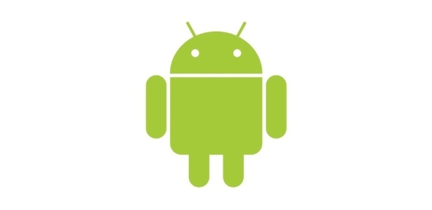

HISTÓRIA DO MASCOTE DO ANDROID
Provalvemente voçê sabe que o sistema operacional Android, mantido pelo google é um dos mais utilizados para dispositivos móveis em todo o mundo. Mas, talvez voçê não saiba que o seu simpático mascote tem um nome e uma história muito curiosa? Pois, acompanhe esse artigo para aprender muitas coisas sobre o robozinho.
Primeira versão
A primeira tentativa de criar um mascote foi em 2007 e veio de um desenvolvedor chamado Dan Morrill. Ele conta que abriu o Inkscape. (software livre para vetorização de imagens) e criou sua própria versão do robô. O objetivo era apenas personificar o sistema para a sua equipe, não existia nenhuma solicitação da empresa para a criação de um mascote.

Essa primeira versão bizarra até foi batizada em homenagem ao seu criador: seriam os Dandroids.
Surge um novo mascote
A ideia de ter um mascote foi amadurecendo e a missão foi passada para a uma profissional da área. A ilustradora Russa Irina Blok. Também funcionária do Google, ficou com a missão de representar o pequeno robô de uma maneira mais agradável.

A ideia principal de Irina era representar tudo graficamente com poucos traços e de uma forma mais chapada. O desenho também deveria gerar identificação rápida com quem o olha. Surgiu então o Bugdroid. O novo mascote do Android.

A Principal inspiração para os traços do novo Bugdroid veio daqueles bonequinhos que ilustram portas de banheiro para indicar o gênero de cada porta. Conta a lenda que a artista estava criando em sua mesa no escritório do Google e olhou para o lado dos banheiros e a identificação foi imediata:simples, limpo, objetivo.